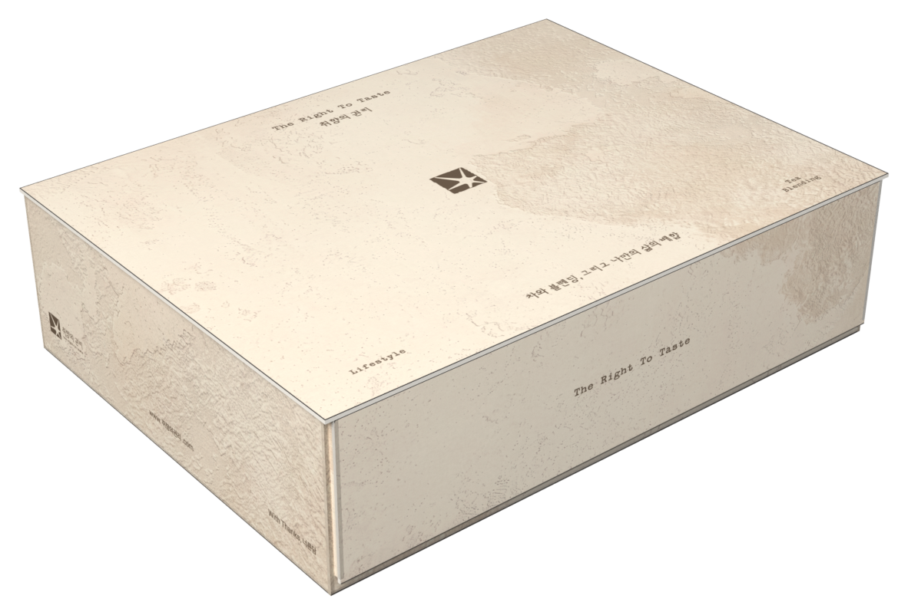
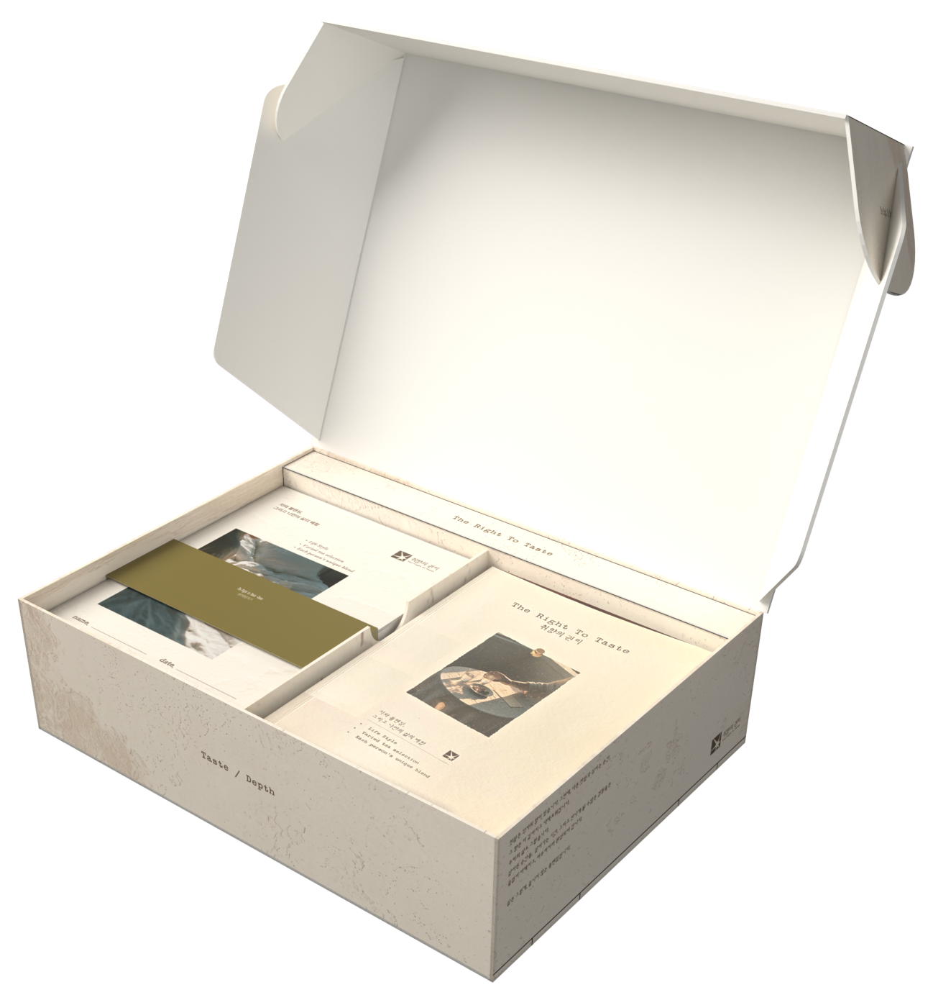
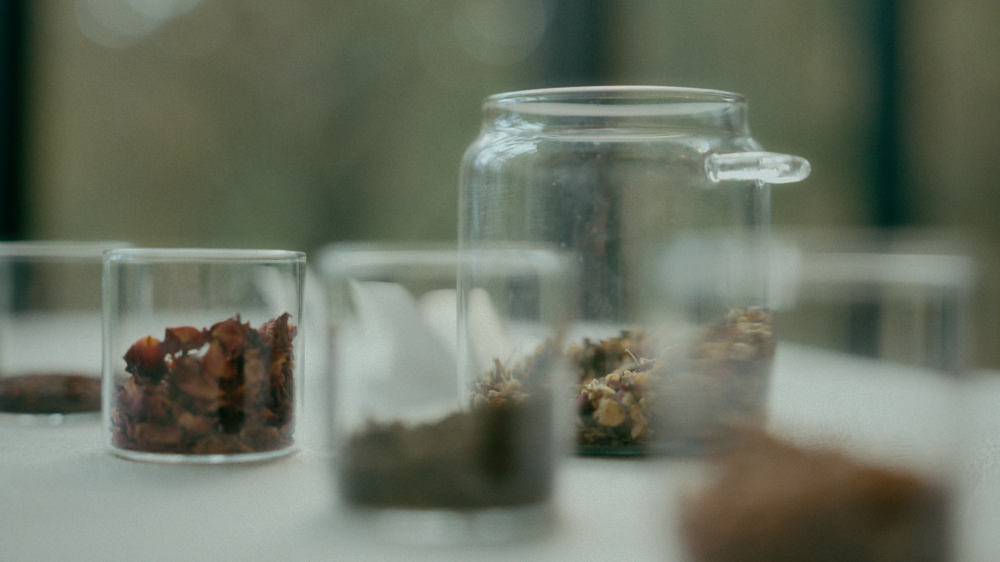
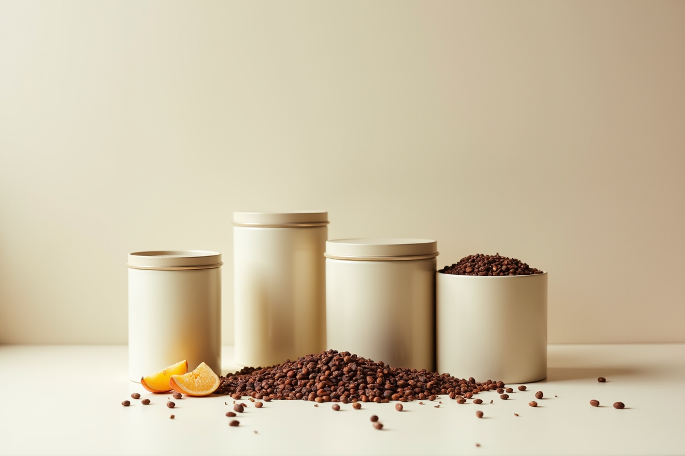

티 블렌딩 키트 1개 · VER.1 HERB 또는 VER.2 GRAIN · 정가 59,000원
한정 수량울트라 얼리버드 리워드 구성 · 선착순 100명

[옵션 1]
티 블렌딩 키트 1 VER.1 HERB 또는 VER.2 GRAIN
59,000원
50,150원15%
원료 3팩 랜덤 추가 증정
스테인리스 인퓨저 증정
2개 구매 시 단팥차 샘플 증정
무료배송
슈퍼 얼리버드 리워드 구성한정 수량

[옵션 2]
티 블렌딩 키트 1 VER.1 HERB 또는 VER.2 GRAIN
59,000원
54,870원7%
스테인리스 인퓨저 증정
2개 구매 시 단팥차 샘플 증정
무료배송
얼리버드 리워드 구성정가

[옵션 3]
티 블렌딩 키트 1 VER.1 HERB 또는 VER.2 GRAIN
59,000원
스테인리스 인퓨저 증정
2개 구매 시 단팥차 샘플 증정
2개 구매 시 무료배송
TWO KIT SET한정 수량 · 추가 리워드
[옵션 4]
VER.1 HERB + VER.2 GRAIN 블렌딩 노트 2권 + 교차 레시피 가이드
오픈 시 공개
HERB와 GRAIN 두 가지 취향을 한 번에
단팥차 샘플 증정
모든 리워드 공통 구성: 티 블렌딩 키트 1개 · 실물 블렌딩 노트 1권 HERB와 GRAIN을 함께 담으면 두 가지 취향을 모두 경험하고, 단팥차 샘플도 함께 받습니다.
서포터 안내
원물 특성상 크기와 색상이 균일하지 않을 수 있으며, 이로 인한 환불은 어렵습니다.
식품 특성상 개봉 후 단순 변심 반품은 어렵습니다.
파손·불량은 수령 후 7일 이내 사진과 함께 문의 주시면 교환해 드립니다.
펀딩 종료 후 순차 발송됩니다.
리워드 옵션·배송지는 펀딩 마감일까지 마이 와디즈에서 수정 가능합니다.
다 쓴 뒤 재구매는 취향의권리.com에서 원료만 낱개로 가능합니다.
빛과 습기를 피해 보관하고, 향이 가장 좋은 한 달 안에 즐겨 주세요.
Recipe Event
당신이 발견한 비율을 들려주세요.
레시피를 공유해 주신 분 중 추첨으로 10명에게 취향의 권리 키트를 만드는 티 브랜드, 티아포테카의 차 4종(10만 원 상당)을 선물합니다.

티아포테카 차 4종 — 단팥차 · 골든 모과 · 두 가지 시그니처
1나만의 차 만들기–키트로 나만의 블렌딩 레시피를 완성해요.
2와디즈 후기 남기기–블렌딩 노트 사진과 레시피로 후기를 써 주세요.
3인스타그램에 공유하기–@right.totaste 팔로우 후 같은 사진을 올리고 태그해 주세요. #취향의권리 #나만의블렌딩 #이벤트참여
참여 기간: 펀딩 기간 중 · 당첨자 발표: 펀딩 종료 후 공식 인스타그램과 개별 DM 참여 대상: 취향의 권리 키트 구매자(와디즈 서포터 닉네임으로 확인) · 1인 1회 응모 · 공개 계정만 참여할 수 있어요 동의해 주신 레시피는 취향의 권리·티아포테카 인스타그램에 소개될 수 있어요.